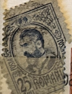
| SOURCE | TITLE| IMAGE MATCH | click to source page |
| HipStamp | DYNAMITE Stamps: Romania Scott #215 – USED | Europe - Romania, General Issue Stamp / HipStamp | 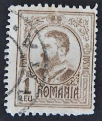 |
| eBay | Romania 25 Bani Stamp - Early Issue (Used Hinged) X23 | eBay | 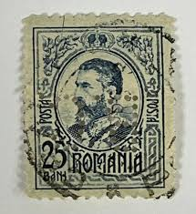 |
| eBay | Romania 1900-11 King Karl I 15B MC: 135 Black Perf 13-1/2 Used Stamp | eBay | 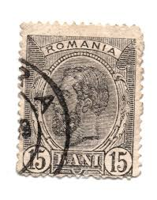 |
| eBay | Blue Postage Romanian Stamps for sale | eBay | 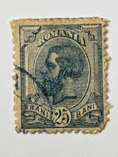 |
| eBay | Superb Romanian Stamps for sale | eBay | 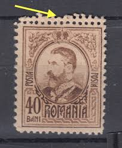 |
| Find Your Stamps Value | Value of posta romana 25 bani stamps | 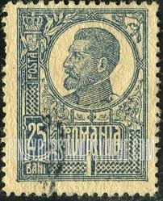 |
| HipStamp | Romania 1919 Early Issue Fine Used 5b. NW-18400 | Europe - Romania, Stamp / HipStamp | 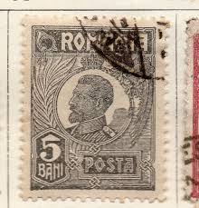 |
| romaniastamps.com | 1908-27 | 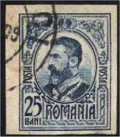 |
| HipStamp | Romania 1908 #210 U SCV(2020)=$0.25 | Europe - Romania, General Issue Stamp / HipStamp | 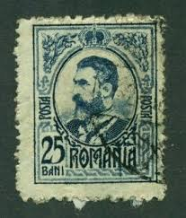 |
| Find Your Stamps Value | King Ferdinand 2l light green stamp price, value | 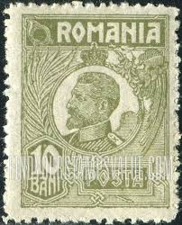 |
| lastdodo.com | Ferdinand I of Romania [1865-1927] Stamp catalogue - LastDodo | 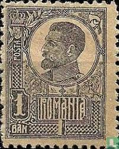 |
| eBay | Romania 1923 STAMPS KING FERDINAND 10 BANI OLIVE GREEN UNISSUED MNH POST | eBay | 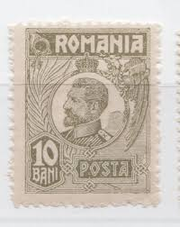 |
| Stamp Community Forum | Typography Stamps - Stamp Community Forum | 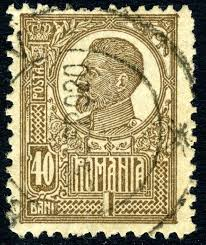 |
| Colnect | Stamp: Carol I of Romania (1839-1914) (Romania(King Carol I) Mi:RO 241,Sn:RO 212,Yt:RO 251,Sg:RO 702 📮 | 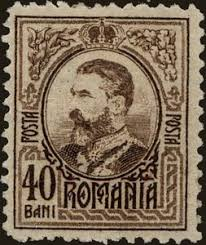 |
| allnumis.com | 15 Bani 1909 - King Carol I, 1909 - Romania - Stamp - 10961 | 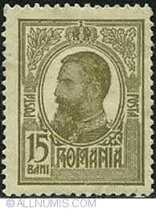 |
| Find Your Stamps Value | King Ferdinand 3l buff stamp price, value | 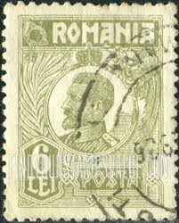 |
| eBay | Romania stamps 1908 King Carol I | eBay | 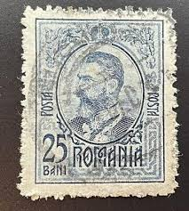 |
| eBay | Romania 125 used | eBay | 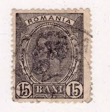 |
| Shutterstock | Romania 1909 15 Bani Olive-green Postage Stock Photo 2326866771 | Shutterstock | 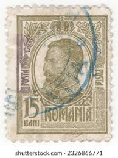 |
| allnumis.com | Romania - Stamps Catalog | 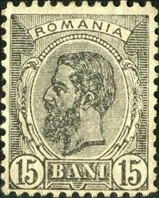 |
| PicClick | 1915 ROUMANIA TIMBRU de Ajutor Semi-Postal 10 Bani Unused Hinged Stamp $1.29 - PicClick | 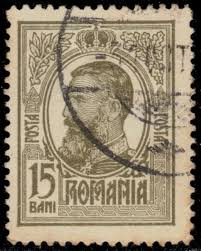 |
| Todocolección | 1918 emisiunea ”moldova” - Buy Antique stamps of Romania on todocoleccion | 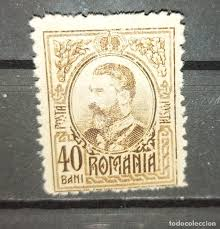 |
| Find Your Stamps Value | Prince Carol Shaking Hands with His Captive, Osman Pasha 10b carmine & black stamp price, value | 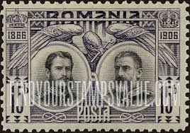 |
| eBay | Foreign Romania 15 Bani Stamp Used - #I625 | eBay | 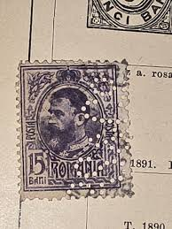 |
| HipStamp | Romania #127 25b King Carol I | Europe - Romania, General Issue Stamp / HipStamp | 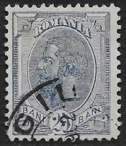 |
| eBay | 1920 King Ferdinand,CAP MARE,Romania,Mi.255 x,Greyish/Coarse paper/Perf.K,MNH | eBay | 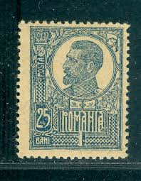 |
| Delcampe | Errors, freaks & oddities (EFO) - ERROR ROMANIA 1920-22, king FERDINAND 5 BANI, printed with point under EAR AND IN BOX AT 5 BANI POINT WHITE unused GUMM | 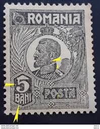 |
| Shutterstock | 60 Carol Ferdinand Royalty-Free Images, Stock Photos & Pictures | Shutterstock | 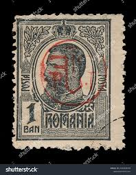 |
| eBay | Romania stamps 1909 King Carol I | eBay | 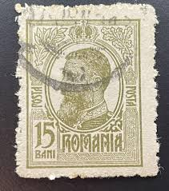 |
| eBay | Used Postage Romanian Stamps for sale | eBay | 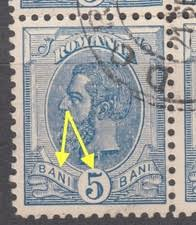 |
| eBay | 1920 King Ferdinand,CAP MARE/Definitive,Romania,Mi.251 y,White paper/Perf.K,MNH | eBay | 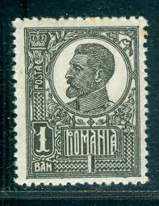 |
| HipStamp | Romania (1920) #248 (3) used. Coarse paper 11 1/2x11 1/2 | Europe - Romania, General Issue Stamp / HipStamp | 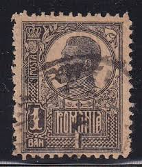 |
| Cherrystone Auctions | U.S. & Worldwide - November 9-11, 2010 - HUNGARY | 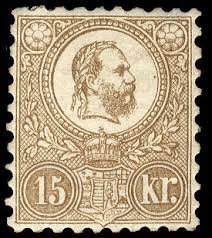 |
| allnumis.com | 15 Bani - Carol I, 1900 - Romania - Stamp - 41777 | 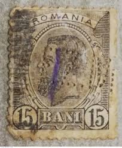 |
| HipStamp | ROMANIA, # 262 used | Europe - Romania, General Issue Stamp / HipStamp | 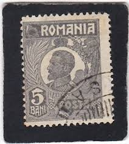 |
| What is the value and information of the 1908 King Karl I Romanian 40 BANI stamp? | 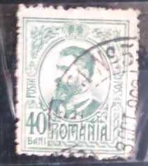 | |
| eBay | Romania Agriculture King Carol 1 and Wheat classic stamp 1903 | eBay | 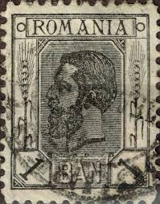 |
| eBay | Romania STAMPS 1920 KING FERDINAND POSTAL HISTORY ERROR MH | eBay | 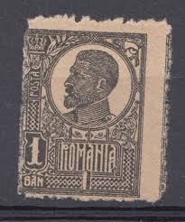 |
| Linns Stamp News | When Romania opened a post office in the Ottoman Empire | 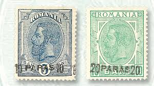 |
| Blogger.com | Big Blue 1840-1940: Hungary Franz Josef I: 1871 Litho vs 1871-72 Engraved issue | 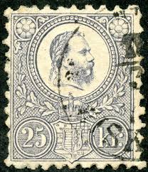 |
| eBay | Mint Hinged Individual Romanian Stamps for sale | eBay | 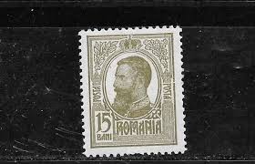 |
| eBay | ROMANIA 266 - King Ferdinand "1920 Violet" (pb54857) | eBay | 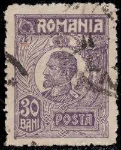 |
| eBay | Romania 1920 King Ferdinand 30 BANI Violet Fiber Paper Mi.269 MNH | eBay | 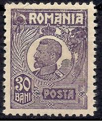 |
| eBay | Romania Scott 262 Stamp Lot - 1922 King Ferdinand I (Mint Hinged) 25_25 | eBay | 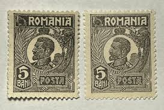 |
| eBay | ✔️ ROMANIA 1908/1918 - KING CAROL I - 1 LEU BROWN - SC. 215 MNH ** | eBay | 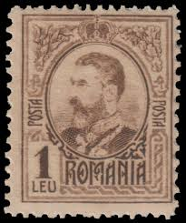 |
| HipStamp | Portugal, stamp, scott#58, used, hinged, 5 REIS, | Europe - Portugal & Colonies, General Issue Stamp / HipStamp | 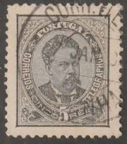 |
| allnumis.com | 5 Bani - Carol I, 1893 - Romania - Stamp - 41774 | 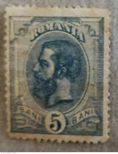 |
| Stamp Community Forum | Romania : 1908 To 1919 - Stamp Community Forum | 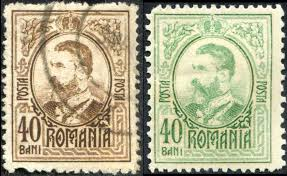 |
| eBay | Romania Postal Stationery Cut Out A17P14F11148 | eBay | 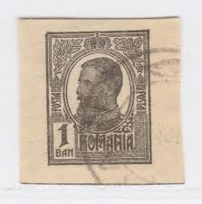 |
| eBay | ROMANIA 1906 15b MH Carol Kingdom Mi 181 Scott 190 Superb 6000 | eBay | |
| The Itty Bitty Stamp Company | Romania Scott # 119 Used – The Itty Bitty Stamp Company | |
| eBay | ROMANIA - USED STAMP - KING FERDINAND, 25b - 1920. | eBay | |
| Alamy | Romania king ferdinand stamp hi-res stock photography and images - Alamy | |
| eBay | Royalty Romanian Stamp Blocks for sale | eBay | |
| eBay | Rumänien, 1 B. schwarz, graues Papier, waagr. Paar, re. Marke SENKR UNGEZÄHNT, * | eBay | |
| stampsandstuff.net | Stamps from Romania 1920-1929 | |
| HipStamp | Romania: Early 1900s Fine Used Revenue Value NW-165247 | Europe - Romania, Stamp / HipStamp | |
| Find Your Stamps Value | Value of guyane francaise 2 cent stamp stamps | |
| Stamp Community Forum | Romania/Romana - Page 6 - Stamp Community Forum | |
| eBay | Foreign Romania 3 Bani Stamp Used - #I618 | eBay |